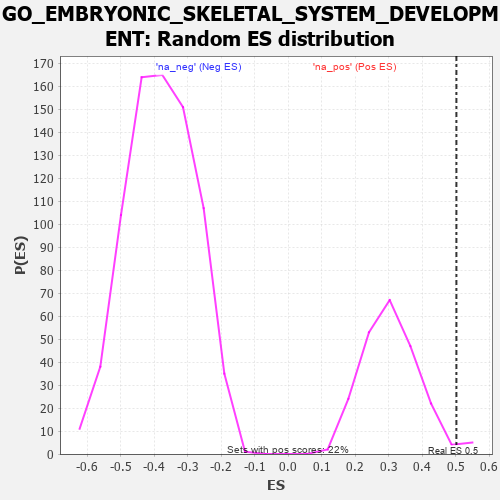

| | | Dataset | 7d |
| Phenotype | NoPhenotypeAvailable |
| Upregulated in class | na_pos |
| GeneSet | GO_EMBRYONIC_SKELETAL_SYSTEM_DEVELOPMENT |
| Enrichment Score (ES) | 0.50166076 |
| Normalized Enrichment Score (NES) | 1.6402497 |
| Nominal p-value | 0.026785715 |
| FDR q-value | 0.22050299 |
| FWER p-Value | 1.0 |
Table: GSEA Results Summary
 Fig 1: Enrichment plot: GO_EMBRYONIC_SKELETAL_SYSTEM_DEVELOPMENT
Fig 1: Enrichment plot: GO_EMBRYONIC_SKELETAL_SYSTEM_DEVELOPMENT
Profile of the Running ES Score & Positions of GeneSet Members on the Rank Ordered List
| PROBE | GENE SYMBOL | GENE_TITLE | RANK IN GENE LIST | RANK METRIC SCORE | RUNNING ES | CORE ENRICHMENT | | 1 | SIX2 | | | 40 | 3.152 | 0.1751 | Yes |
| 2 | TGFB3 | | | 49 | 2.654 | 0.3257 | Yes |
| 3 | SP3 | | | 131 | 1.391 | 0.3950 | Yes |
| 4 | SHOX2 | | | 288 | 0.842 | 0.4235 | Yes |
| 5 | TAPT1 | | | 354 | 0.743 | 0.4578 | Yes |
| 6 | ALX4 | | | 413 | 0.686 | 0.4896 | Yes |
| 7 | ALX1 | | | 590 | 0.598 | 0.5017 | Yes |
| 8 | MEF2C | | | 1054 | 0.473 | 0.4704 | No |
| 9 | BMP7 | | | 2107 | 0.290 | 0.3546 | No |
| 10 | FGFR2 | | | 2895 | 0.167 | 0.2651 | No |
| 11 | PCSK5 | | | 2983 | 0.152 | 0.2628 | No |
| 12 | SMAD3 | | | 3303 | 0.105 | 0.2286 | No |
| 13 | NIPBL | | | 3900 | 0.010 | 0.1542 | No |
| 14 | EXT1 | | | 3954 | 0.001 | 0.1476 | No |
| 15 | EYA1 | | | 3987 | -0.006 | 0.1439 | No |
| 16 | PAX5 | | | 4255 | -0.051 | 0.1132 | No |
| 17 | WNT11 | | | 4282 | -0.056 | 0.1131 | No |
| 18 | SETD2 | | | 4443 | -0.084 | 0.0978 | No |
| 19 | DLG1 | | | 4860 | -0.169 | 0.0551 | No |
| 20 | TBX1 | | | 5166 | -0.241 | 0.0305 | No |
| 21 | PCGF2 | | | 5943 | -0.451 | -0.0414 | No |
| 22 | SMAD2 | | | 6216 | -0.541 | -0.0447 | No |
| 23 | MKS1 | | | 6607 | -0.715 | -0.0530 | No |
| 24 | DMRT2 | | | 6718 | -0.768 | -0.0230 | No |
| 25 | WDR19 | | | 6796 | -0.812 | 0.0138 | No |
| 26 | WDR60 | | | 7153 | -1.038 | 0.0283 | No |
| 27 | LHX1 | | | 7431 | -1.305 | 0.0680 | No |
Table: GSEA details [plain text format]

Fig 2: GO_EMBRYONIC_SKELETAL_SYSTEM_DEVELOPMENT: Random ES distribution
Gene set null distribution of ES for GO_EMBRYONIC_SKELETAL_SYSTEM_DEVELOPMENT